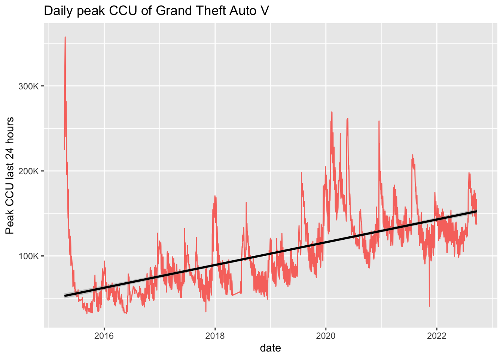
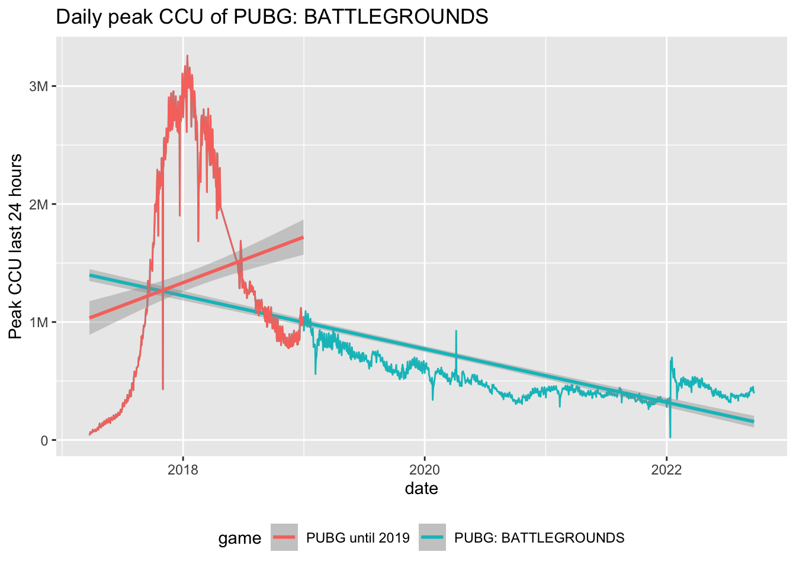
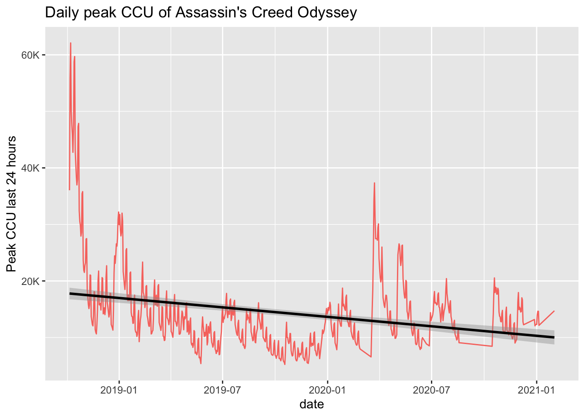

library(tidyverse)
library(broom)
library(ggrepel)
Sys.setlocale("LC_TIME", "C") # For English month names
options("lubridate.week.start" = 1)
steam_stats <- readRDS("steam_stats.rds")Using Steam’s basic usage statistics to see which games have staying power
Introduction
A long time ago I saw a presentation by Eric Seufert on Using (Free!) App Annie data to optimize your next game1. The idea was to do market research by taking the daily iOS Top Grossing chart positions of games and then do a linear regression of them and so filter down to games that have a positive coefficient over time. It’s really rough but does give some indication about games’ life cycles and potential. One downside is that you only get the chart position when ideally you would want to know the daily player count or daily revenue (although you can get estimates of these if you pay for them).
Similar analysis can also be done on Steam, using the data available at Steam & Game Stats page. This page shows the current and peak players for top 100 games by current or daily players. The daily players is a more recent addition, back when I did my analysis below this option wasn’t available. Instead of peak or current, ideally you would like to have a daily active user (DAU) figure, but either of these should work as a proxy for it. Also, ideally, it would be nice to be able to browse this data over time, but Steam doesn’t provide this. This data is collected for example by SteamCharts, but they don’t have a public API for the historical data.
For your own purposes, you would need either have a script collect the data through Steam Web API like SteamCharts, and try to use services like Internet Archive to get historical data and scrape the HTML.
Data quality and limitations
In this analysis I’ll use a data set ranging between January 2015 and September 2022, with (almost) daily data from mid-August 2016 onwards (except around May 2018). The data collection method was a bit spotty in the beginning, because I was trying to get historical data through the Internet Archive’s Wayback Machine.
dates <- unique(steam_stats$date)
expected <- seq(min(dates), max(dates), by="day")
cal <- tibble(
date = expected,
data_exists = if_else(expected %in% dates, "Yes", "No")
) |>
mutate(
year = year(date),
month = month(date, label = TRUE),
wday = wday(date, label = TRUE, abbr = TRUE),
isoweek = isoweek(date)
) |>
group_by(year, month) |>
mutate(week = if_else(
month(date) == 1 & isoweek(date) >= 52,
1,
if_else(
month(date) == 12 & isoweek(date) == 1,
max(isoweek(date)) + 1,
isoweek(date)
)
) - min(
if_else(month(date) == 12 & isoweek(date) == 1,
max(isoweek(date))+1,
isoweek(date)))+1
) |>
ungroup()
ggplot(cal, aes(y = week, x = wday, fill = data_exists)) +
geom_tile(color = "white") +
coord_equal() +
facet_grid(year ~ month) +
scale_y_reverse(labels = NULL, breaks = NULL) +
scale_x_discrete(labels = NULL, breaks = NULL) +
labs(title = "Data availability", x = NULL, y = NULL, fill = "Data exists") +
guides(fill = guide_legend(position = "bottom"))
Just to remind, this is data from Steam only, so it gives no indication of these games’ performance on consoles or on other launchers on PC (like Epic Games or GOG). We are also only looking at games that managed to get at least once to Top 100 list. There are tens of thousands of games on Steam, and we are limited to looking at barely 1264 of them.
Also note that this analysis does not tell anything about a game’s revenue performance - we are looking at player counts, not revenue. However, what it tells is what kind of games are prime candidates for service-based business models. In fact, looking at the data it is pretty easy to identify which games are (or act like) traditional AAA games with little post-launch planning and which games can sustain and grow their audience over time - be it through marketing efforts or pure virality or a combination of these.
Data prep and cleanup
Once we have parsed the data and have the raw data set, let’s check the condition of the data we have. First we explore the uniqueness and existence of both Game IDs and game names and the cardinality between the two.
Football Manager together with Call of Duty have some entries missing the Game ID in the raw data. Fortunately, these can be found from elsewhere in the data.
steam_stats |>
filter(is.na(game_id)) |>
group_by(game) |>
summarise(n = n()) |>
arrange(-n) |>
left_join(steam_stats |>
filter(!is.na(game_id)) |>
group_by(game_id) |>
summarise(game=first(game)), by = "game") |>
group_by(game) |>
summarise(
n = sum(n),
game_id = paste(unique(game_id), collapse = ", ")
) |>
knitr::kable(col.names = c("Game", "N", "Game ID"), align = "lcc")| Game | N | Game ID |
|---|---|---|
| Call of Duty: Advanced Warfare - Multiplayer | 85 | 209660 |
| Call of Duty: Black Ops II - Multiplayer | 244 | 202990 |
| Call of Duty: WWII - Multiplayer | 2 | 476600, 476620 |
| Football Manager 2012 | 27 | 71270 |
| Football Manager 2013 | 91 | 207890 |
| Football Manager 2014 | 304 | 231670 |
Games with missing Game IDs
steam_stats <- steam_stats |>
group_by(game) |>
mutate(game_id = if_else(is.na(game_id), min(game_id, na.rm = TRUE), game_id)) |>
ungroup()In the above table, you’ll notice Call of Duty: WWII - Multiplayer matches two Game IDs. There’s also some more non-uniqueness with game names in the data set.
steam_stats |>
group_by(game) |>
summarise(
count = length(unique(game_id)),
ids = paste(unique(game_id), collapse = ", ")) |>
filter(count > 1) |>
arrange(-count) |>
knitr::kable(col.names = c("Game", "Count", "Game IDs"), align = "lcc")| Game | Count | Game IDs |
|---|---|---|
| Black Desert | 2 | 836620, 582660 |
| Call of Duty: Modern Warfare 2 - Multiplayer | 2 | 10190, 10180 |
| Call of Duty: Modern Warfare 3 - Multiplayer | 2 | 42690, 115300 |
| Call of Duty: WWII - Multiplayer | 2 | 476600, 476620 |
| H1Z1 | 2 | 295110, 433850 |
| Total War: SHOGUN 2 | 2 | 34330, 201270 |
Games with multiple Game IDs
steam_stats <- steam_stats |>
group_by(game) |>
mutate(game_id = min(game_id)) |>
ungroup()In addition there are also multiple names for the same Game ID. Name changes are somewhat common, usually these are weird punctuation changes (Elite: Dangerous -> Elite Dangerous) or in case of Asian games, addition of an English name. Or, in the case of for example H1Z1, evolution of the game. There was also some weirdness with addition and removal of trademark symbols, but those were filtered out already in the parsing of the raw data2. This suggests that following the lifecycle of all games programmatically can get really complicated.
steam_stats |>
filter(!is.na(game_id)) |>
group_by(game_id) |>
summarise(
count = length(unique(game)),
names = paste(unique(game), collapse = ", ")
) |>
filter(count > 1) |>
arrange(-count) |>
head(25) |>
knitr::kable(col.names = c("Game ID", "Count", "Game names"), align = "lcr")| Game ID | Count | Game names |
|---|---|---|
| 1205550 | 3 | New World Confidential Test, New World Preview, New World Closed Beta |
| 268850 | 3 | EVGA PrecisionX 16, EVGA PrecisionX OC, EVGA Precision XOC |
| 295110 | 3 | H1Z1, H1Z1: Just Survive, Just Survive |
| 677620 | 3 | Splitgate: Arena Warfare, Splitgate, Splitgate (Beta) |
| 10500 | 2 | Empire: Total War, Total War: EMPIRE - Definitive Edition |
| 1056640 | 2 | Phantasy Star Online 2, Phantasy Star Online 2 New Genesis |
| 1097150 | 2 | Fall Guys, Fall Guys: Ultimate Knockout |
| 1203220 | 2 | NARAKA: BLADEPOINT Demo, NARAKA: BLADEPOINT |
| 1301210 | 2 | Knockout City Block Party Trial, Knockout City Trial |
| 1599340 | 2 | Lost Ark Closed Technical Alpha, Lost Ark |
| 1619990 | 2 | SUPER PEOPLE CBT, SUPER PEOPLE FINAL BETA |
| 208580 | 2 | Star Wars: Knights of the Old Republic II, STAR WARS Knights of the Old Republic II: The Sith Lords |
| 221380 | 2 | Age of Empires II: HD Edition, Age of Empires II (2013) |
| 226320 | 2 | Marvel Heroes 2015, Marvel Heroes 2016 |
| 228200 | 2 | Company of Heroes (New Steam Version), Company of Heroes |
| 238960 | 2 | Path of Exile, PATH OF EXILE: ROYALE |
| 24010 | 2 | Train Simulator 2015, Train Simulator |
| 273350 | 2 | Evolve, Evolve Stage 2 |
| 306130 | 2 | The Elder Scrolls Online, The Elder Scrolls Online: Tamriel Unlimited |
| 322330 | 2 | Don’t Starve Together Beta, Don’t Starve Together |
| 359320 | 2 | Elite: Dangerous, Elite Dangerous |
| 363150 | 2 | Romance of the Three Kingdoms 13 / 三國志13, Romance of the Three Kingdoms 13 |
| 368230 | 2 | Kingdom, Kingdom: Classic |
| 39210 | 2 | FINAL FANTASY XIV: A Realm Reborn, FINAL FANTASY XIV Online |
| 433850 | 2 | H1Z1: King of the Kill, Z1 Battle Royale |
Top 25 games with multiple names
steam_stats <- steam_stats |>
group_by(game_id) |>
mutate(game = last(game)) |>
ungroup()With some annual franchises like Football Manager and 2K’s NBA - the player base quickly migrates to the next installation a(nd sometimes like with the first franchise, the old game is removed from the Steam storefront). These installments could be grouped to one game for our purposes, but where should we set the limit? Should we do similar treatment for Call of Duty or just for annual sports franchises?
ggplot(steam_stats |>
select(peak_today, game, date) |>
filter(str_starts(game, "Football Manager")) |>
mutate(game = str_replace(game, "Football Manager", "FM")),
aes(x = date, y = peak_today, color = game)) +
geom_line() +
labs(title = "Daily peak CCU for Football Manager games", x = "Date", y = "Peak CCU last 24 hours", color = "Installment") +
scale_y_continuous(labels = scales::label_number(scale_cut = scales::cut_short_scale()))
steam_stats <- steam_stats |>
mutate(game = if_else(str_starts(game, "Football Manager"), "Football Manager", game)) |>
group_by(game) |>
mutate(game_id = if_else(game == "Football Manager", min(game_id), game_id)) |>
group_by(game, game_id, date) |>
# NOTE: We assume distinct players across games, there can be overlap, we could also take max
summarise(peak_today = sum(peak_today), current_players = sum(current_players), .groups = "drop") ggplot(steam_stats |>
select(peak_today, game, date) |>
filter(str_starts(game, "NBA 2K")),
aes(x = date, y = peak_today, color = game)) +
geom_line() +
scale_y_continuous(labels = scales::label_number(scale_cut = scales::cut_short_scale())) +
labs(title = "Daily peak CCU for 2K's NBA games", x = "Date", y = "Peak CCU last 24 hours", color = "Installment") 
steam_stats <- steam_stats |>
mutate(game = if_else(str_starts(game, "NBA 2K"), "NBA 2K", game)) |>
group_by(game) |>
mutate(game_id = if_else(game == "NBA 2K", min(game_id), game_id)) |>
group_by(game, game_id, date) |>
# NOTE: We assume distinct players across games, there can be overlap, we could also take max
summarise(peak_today = sum(peak_today), current_players = sum(current_players), .groups = "drop") Now our data is in a good enough shape to continue with the actual modeling.
Modeling engagement and growth
Seufert’s idea was to summarise a game’s activity graph as a simple linear regression: we can use the trend line’s slope as a summary of how well the game’s player base is doing. As an example, let’s check what the Steam activity looks like for Warframe and Rainbow Six Siege3. The idea is to do this for all games in the dataset and find the games that go to the up and the right, ie. have a positive trend line.
steam_stats |>
filter(game %in% c("Tom Clancy's Rainbow Six Siege", "Warframe")) |>
ggplot(aes(x = date, y = peak_today, color = game)) +
labs(title = "Daily peak CCU of Siege and Warframe", y = "Peak CCU last 24 hours", color = NULL) +
geom_line(aes(color = game)) +
guides(color = guide_legend(position = "bottom")) +
geom_smooth(method = 'lm') +
scale_y_continuous(labels = scales::label_number(scale_cut = scales::cut_short_scale()))`geom_smooth()` using formula = 'y ~ x'
games <- steam_stats |>
group_by(game) |>
nest() |>
mutate(
first_date = map_vec(data, \(x) min(x$date)),
model = map(data, \(x) lm(peak_today ~ date, data = x)),
glance = map(model, broom::glance),
tidy = map(model, broom::tidy)
) |>
unnest(c(glance, tidy), names_repair = "unique") |>
filter(term == "date") |>
select(game, first_date, r.squared, nobs, estimate) |>
rename(coeff = estimate) |>
filter(!is.na(coeff)) |>
ungroup()games |>
filter(nobs > 90) |>
arrange(-coeff) |>
head(25) |>
knitr::kable(col.names = c("Game", "First date", "$R^2$", "Observations", "Coefficient"), align = "lcc", digits = 2)| Game | First date | \(R^2\) | Observations | Coefficient |
|---|---|---|---|---|
| Apex Legends | 2020-11-06 | 0.77 | 685 | 387.70 |
| Counter-Strike: Global Offensive | 2015-01-01 | 0.47 | 2475 | 170.20 |
| MONSTER HUNTER RISE | 2022-01-13 | 0.04 | 211 | 128.77 |
| Source SDK Base 2013 Multiplayer | 2017-05-25 | 0.87 | 1245 | 120.31 |
| Stumble Guys | 2022-02-25 | 0.78 | 202 | 111.62 |
| FIFA 22 | 2021-10-01 | 0.34 | 357 | 77.28 |
| Total War: WARHAMMER III | 2022-02-18 | 0.03 | 119 | 75.08 |
| Wallpaper Engine | 2017-01-06 | 0.86 | 2027 | 42.02 |
| Z1 Battle Royale | 2016-02-22 | 0.05 | 531 | 40.46 |
| Rust | 2015-01-01 | 0.64 | 2475 | 37.47 |
| Grand Theft Auto V | 2015-04-14 | 0.39 | 2426 | 36.63 |
| Tom Clancy’s Rainbow Six Siege | 2015-12-01 | 0.19 | 2299 | 24.31 |
| Raft | 2018-06-13 | 0.29 | 382 | 23.79 |
| eFootball PES 2020 | 2019-07-31 | 0.38 | 410 | 22.47 |
| World of Warships | 2017-11-19 | 0.10 | 578 | 21.57 |
| Dead by Daylight | 2016-06-15 | 0.63 | 2187 | 20.77 |
| Splitgate | 2019-05-25 | 0.06 | 99 | 19.91 |
| tModLoader | 2020-05-17 | 0.63 | 857 | 19.73 |
| Phantasy Star Online 2 New Genesis | 2020-08-06 | 0.09 | 204 | 19.48 |
| Tomb Raider | 2015-01-01 | 0.52 | 95 | 17.68 |
| Source SDK Base 2007 | 2015-03-24 | 0.07 | 462 | 16.49 |
| Hunt: Showdown | 2018-02-23 | 0.64 | 1051 | 15.40 |
| Hearts of Iron IV | 2016-06-07 | 0.84 | 2193 | 14.97 |
| The Sims 4 | 2020-09-07 | 0.32 | 675 | 14.88 |
| Team Fortress 2 | 2015-01-01 | 0.32 | 2475 | 14.85 |
Only games with at least 90 observations
Top 25 games by slope coefficient
Many games only a quick appearance in the Top 100, either by having a big launch with little follow-up or due to a free weekend, full game giveaway or an open beta. We can filter these out by only looking at games that have been on the top list for at least 90 (non-consecutive) days. It’s also worth to note that this is not a list of top played games played on Steam, this list is sorted by how much we have seen these games’ player counts increase over time.
Above you’ll notice Source SDK Base 2013 Multiplayer, it is used as the game identifier for some GTA V mod. Likewise, a game called Spacewar might also pop up, it is a game included as a sample app in Steam SDK and often used as a placeholder by pirated games. You might also wonder about Wallpaper Engine, and I’ll let this MIT Technology Review article eplain that one. We’ll filter these out.
games <- games |>
filter(!game %in% c("Source SDK Base 2013 Multiplayer", "Spacewar", "Wallpaper Engine"))Data exploration
Interesting cases of game’s growth are for example Grand Theft Auto V. We see a traditional launch spike, but followed with a solid growth thanks to the GTA Online feature. The mid-year and year end spikes are related to Steam’s biannual sales when the game has been available for a steep discount. The game was given away free on Epic Games Store in May 2020, and this giveaway shows as increased player activity also on Steam.
steam_stats |>
filter(game == "Grand Theft Auto V") |>
ggplot(aes(x = date, y = peak_today, color = game)) +
labs(title = "Daily peak CCU of Grand Theft Auto V", y = "Peak CCU last 24 hours") +
geom_line() +
scale_y_continuous(labels = scales::label_number(scale_cut = scales::cut_short_scale())) +
geom_smooth(method = 'lm', color = "black") +
guides(color = "none")`geom_smooth()` using formula = 'y ~ x'
Destiny 2 was released on Steam as a free-to-play title in October 2019. It’s normal that the initial interest wanes off for this kind of a AAA title, but the crucial thing for service based game is if it can recover from the “death valley”.
steam_stats |>
filter(game == "Destiny 2") |>
ggplot(aes(x = date, y = peak_today, color = game)) +
labs(title = "Daily peak CCU of Destiny 2", y = "Peak CCU last 24 hours") +
guides(color = "none") +
geom_line() +
scale_y_continuous(labels = scales::label_number(scale_cut = scales::cut_short_scale())) +
geom_smooth(method = 'lm', color = "black")`geom_smooth()` using formula = 'y ~ x'
Have we looked at the data early 2018, the top performer would have been PUBG. It was a massive beast during 2018 but it looks like Fortnite won the battle. Fornite, obviously, isn’t on Steam so we can’t compare it against PUBG here, but charts comparing their viewership on Twitch show Fortnite bypassing PUBG around February 2018, which is when we see PUBG’s activity on Steam start to crater.
steam_stats |>
filter(game == "PUBG: BATTLEGROUNDS") |>
ggplot(aes(x = date, y = peak_today, color = game)) +
labs(title = "Daily peak CCU of PUBG: BATTLEGROUNDS", y = "Peak CCU last 24 hours") +
guides(color = guide_legend(position = "bottom")) +
geom_line() +
geom_smooth(method = 'lm') +
scale_y_continuous(labels = scales::label_number(scale_cut = scales::cut_short_scale())) +
geom_line(aes(color = "PUBG until 2019"), data = steam_stats |> filter(game == "PUBG: BATTLEGROUNDS", date < as.Date("2019-01-01"))) +
geom_smooth(aes(color = "PUBG until 2019"), data = steam_stats |> filter(game == "PUBG: BATTLEGROUNDS", date < as.Date("2019-01-01")), method = 'lm')`geom_smooth()` using formula = 'y ~ x'
`geom_smooth()` using formula = 'y ~ x'
In our analysis we are looking at all the data, but we could limit the outcome window of games and only look at first X months after launch as well. The way we are doing our analysis here is a bit sensitive to the point of time we are looking at and biased toward new games that have yet to reach their plateau.
The true value of this analysis is to find those “smaller” games that are still growing, year on year. Especially the stories of niche games like Euro Truck Simulator 2 are very interesting. The higher variance in Path of Exile could indicate it seems to really depend on regular content updates to drive players back. This can be a dangerous content treadmill. ETS2 regularly adds new regions as DLCs, but it user activity seems to be growing in a more stable fashion.
steam_stats |>
filter(game %in% c("Euro Truck Simulator 2", "Path of Exile")) |>
ggplot(aes(x = date, y = peak_today, color = game)) +
labs(title = "Daily peak CCU of Path of Exile and ETS2", y = "Peak CCU last 24 hours", color = NULL) +
scale_y_continuous(labels = scales::label_number(scale_cut = scales::cut_short_scale())) +
guides(color = guide_legend(position = "bottom")) +
geom_line() +
geom_smooth(method = 'lm')`geom_smooth()` using formula = 'y ~ x'
We can also look at “product-like” launches, with huge intial spikes and eventual fall off the charts - what I would call traditional games as products. This games are often single player experiences with little replayability. These games usually benefit from new player acquisition spikes during Steam’s winter and summer sales.
steam_stats |>
filter(game == "Assassin's Creed Odyssey") |>
ggplot(aes(x = date, y = peak_today, color = game)) +
labs(title = "Daily peak CCU of Assassin's Creed Odyssey", y = "Peak CCU last 24 hours") +
guides(color = "none") +
geom_line() +
scale_y_continuous(labels = scales::label_number(scale_cut = scales::cut_short_scale())) +
geom_smooth(method = 'lm', color = "black")`geom_smooth()` using formula = 'y ~ x'
Clustering the games
In Seufert’s presentation, he wanted to map the “opportunities”, or games with an upward trajectory, on a matrix with “Mass appeal / Niche appeal” and “Male / Female” axes. I’ll chart the games a little bit differently, based on the elements that correlate with the idea of “staying power”. Below we’ll just cluster based on the linear regression coefficients and top chart data. We could further enrich the data with furhter metadata from Steam, for example publisher-set genres and user-defined tags that could also be used as features for clustering or other segmentation.
ggplot(data = games |> filter(coeff > 0, nobs > 90),
aes(x = r.squared, y = coeff, label = game)) +
labs(
title = "Top games by slope that have more than 90 observations",
subtitle = "Games in top-right have grown most and most consistently",
x = "R^2",
y = "Coefficient (log scale)") +
geom_point() +
scale_y_log10() +
geom_text_repel(max.overlaps = 9, size = 3)
Above is a chart of all the games that have been on top list on more than 90 occasions (~days) and which have in general seen their player base growing since the launch of the game. Y-axis (in logarithmic scale) is the coefficient (~avg. player growth/day) and X-axis is the \(R^2\).
We can try to quickly group these games a bit by clustering. The attributes used in clustering are the slope, days in top list and the \(R^2\). We’ll also this time include all the games, not just those that have a positive trend to also identify games that have more product-like activity curves.
set.seed(42)
cluster_games <- games |>
filter(nobs > 90 & !is.na(coeff)) |>
mutate(
age = as.numeric(max(steam_stats$date) - first_date),
logcoeff = if_else(coeff > 0, log10(coeff), -log10(-coeff))
)
games_matrix <- cluster_games |>
select(-c(game, first_date, coeff)) |>
as.matrix() |>
scale()
rownames(games_matrix) <- cluster_games |>
pull(game)
km <- kmeans(games_matrix, centers = 4, nstart = 25)
# rescale cluster centers
km$centers |>
sweep(2, attr(games_matrix, "scaled:scale"), "*") |>
sweep(2, attr(games_matrix, "scaled:center"), "+") |>
as_tibble() |>
knitr::kable(col.names = c("$R^2$", "Observations", "Age", "Log of Coefficient"), align = "c", digits = c(2, 0, 0, 4), row.names = TRUE)| \(R^2\) | Observations | Age | Log of Coefficient | |
|---|---|---|---|---|
| 1 | 0.11 | 521 | 2225 | 0.0436 |
| 2 | 0.23 | 443 | 871 | -1.6580 |
| 3 | 0.62 | 638 | 2203 | -0.0300 |
| 4 | 0.36 | 2240 | 2670 | 0.6216 |
Cluster centers
We can make rough explanations for the clusters,
- Games that do not have a strong explanatory power
- Product-like games with a downward trend
- Games with strong explanatory power, some of the opportunities can be found here
- Service-like games that have upward trend and are mainstays on the top charts
cluster_games <- cluster_games |>
mutate(cluster = km$cluster)
ggplot(
data = cluster_games,
aes(x = r.squared, y = logcoeff, label = game, color = as.factor(cluster))
) +
labs(
title = "Clustering of games",
subtitle = "Games that have more than 90 observations",
x = "$R^2$",
color = "Cluster",
y = "Coefficient (log scale)"
) +
geom_point() +
geom_text_repel(max.overlaps = 12, size = 3)
Conclusion
This is just a quick clustering, and very likely far from optimal. We still want to focus on the top-right corner of this map to find the winners and opportunities. We might want to segment the data based on the age of the game and as mentioned before, limit the outcome window of the games. We are also working with left-censored data, some of the big games had already plateaued by the start date of our data set, like Dota 2.
This analysis can be used as a quick way to get a better sense of the games on Steam’s top charts and what their trajectories look like. It can’t be overstated that this analysis is by necessity backward looking and it might be late to try to join the hype train as the market trends might change fast.
Footnotes
App Annie is now part of SensorTower, and this same analysis could be done with any source that gives you historical Top Grossing positions. App Annie just provided that information for free, although not for long after this presentation was shared.↩︎
Not shown here.↩︎
These are poor examples in that they are multiplatform games that even on PC have their own launchers, so very much not Steam exclusive games.↩︎